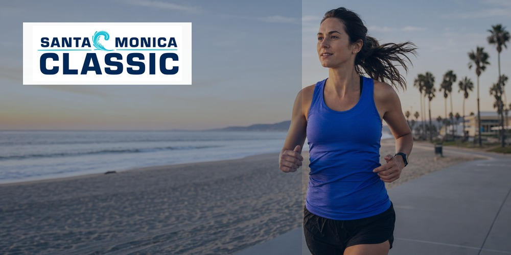

| OFFICIAL DIGITAL TRAINING PLATFORM OF SANTA MONICA CLASSIC | |||||||
 | |||||||
SANTA MONICA CLASSIC 5K/10K / SUNDAY, SEPTEMBER 13, 2026 The finish line is a beginning. | |||||||
| Hi [First Name], the Santa Monica Classic is behind you, but the momentum you built does not have to be. A consistent next step can be as simple as opening your plan. RunDot Training Intelligence builds around your schedule, fitness, and goals, then adapts as life happens. Keep the routine that got you to the start line. | |||||||
Your plan is built around you: | |||||||
| |||||||
| BUILD MY PLAN Whatever is next, you do not have to figure it out alone. | |||||||
{{ site_settings.company_name }} {{ site_settings.company_street_address_1 }} {{ site_settings.company_street_address_2 }} {{ site_settings.company_city }}, {{ site_settings.company_state }} {{ site_settings.company_zip }} {{ site_settings.company_country }} |